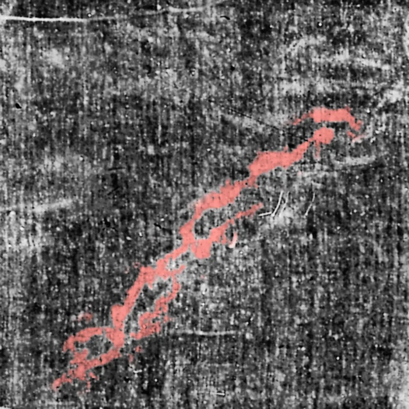
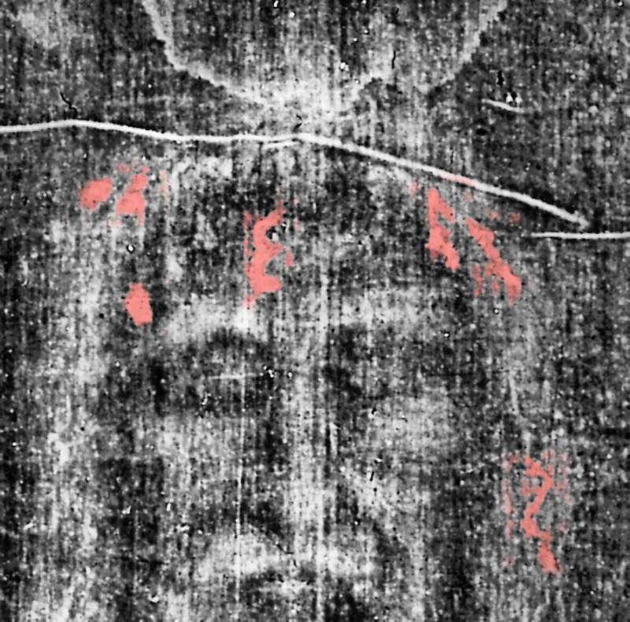
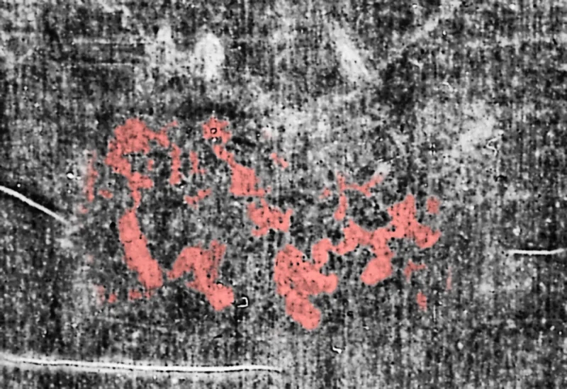

Die Wunden und was die Evangelien sagen
Klicken Sie auf eine Nummer auf dem Tuch oder auf eine Wunde in der Liste. Jedes Mal wird so erklärt, wie forensische Pathologen es beschreiben, neben dem Vers aus den Evangelien, dem es entspricht, und mit dem Hinweis der Skeptiker, wo es einen gibt.


Eine römische Kreuzigung war eine öffentliche Hinrichtung, die demütigen sollte. Die Evangelien beschreiben die eine, um die es hier geht, mit nüchternen Einzelheiten. Das Tuch zeigt eine Hinrichtung mit denselben Merkmalen, darunter einige, die die mittelalterliche Kunst falsch darstellte.
Stichspuren an der Stirn
Mehrere Blutspuren laufen von Einstichstellen die Stirn hinab. Eine Spur hat die Form der Ziffer 3 (oft Epsilon genannt), was Bucklin damit erklärt, dass das Blut den Hautfalten folgte.
Und die Kriegsknechte flochten eine Krone von Dornen und setzten sie auf sein Haupt und legten ihm ein Purpurkleid an
Bucklin, Viewpoint of a Forensic Pathologist · Bucklin, Autopsy on the Man of the Shroud
Verletzungen im Gesicht
Bucklin berichtet von einer Schwellung über der rechten Wange, einem teilweise geschlossenen rechten Auge, einer leichten Krümmung der Nase und einer Schürfwunde an der Nasenspitze. Bevilacqua und D'Arienzo beschreiben das rechte Auge dagegen als eingesunken, als Folge einer Nervenverletzung.
und spieen ihn an und nahmen das Rohr und schlugen damit sein Haupt.
Bucklin, Viewpoint of a Forensic Pathologist · Bevilacqua und D'Arienzo 2015, MATEC 36:03003
Kratzer und Schmutz an der Nase
Bucklin beschreibt Kratzer und Schmutz im Bereich der Nase, vereinbar damit, dass das Gesicht bei einem Sturz auf den Boden schlug. Stürze auf dem Weg zur Hinrichtung sind Überlieferung, nicht Evangelium.
Bucklin, Viewpoint of a Forensic Pathologist · Nitowski 1986
Abgesenkte rechte Schulter
Bevilacqua und D'Arienzo berichten, die rechte Schulter sei um etwa 15 Grad abgesenkt, und deuten dies als ausgekugelten rechten Oberarm, vielleicht durch einen Sturz beim Tragen des Balkens.
Bevilacqua und D'Arienzo 2015, MATEC 36:03003 · Bevilacqua, Fanti, D'Arienzo 2017, Open Journal of Trauma
Nagelwunde am Handgelenk
Ein Blutfleck auf dem Rücken der linken Hand liegt zum Handgelenk hin, und zwei Rinnsale laufen in einem Winkel von etwa 10 Grad zueinander davon weg. Bucklin errechnet, dass die Arme um etwa 65 Grad erhoben waren und dass der Mann seine Haltung veränderte. Barbet verortete den Nagel im Destot-Raum des Handgelenks; Zugibe meint, er sei in die obere Handfläche eingedrungen und am Handgelenk ausgetreten.
Es sei denn, daß ich in seinen Händen sehe die Nägelmale und lege meinen Finger in die Nägelmale und lege meine Hand in seine Seite, will ich's nicht glauben.
Bucklin, Autopsy on the Man of the Shroud · Zugibe 1995, Pierre Barbet Revisited
Daumen nicht sichtbar
An jeder Hand sind nur vier Finger zu sehen. Barbet und Bucklin erklären das mit einer Nervenschädigung, die die Daumen in die Handflächen zog; Zugibe sagt, die Daumen lägen einfach vor den Zeigefingern und hätten das Tuch nicht berührt.
Zugibe 1995, Pierre Barbet Revisited · Bucklin, Autopsy on the Man of the Shroud
Blutspuren entlang der Unterarme
Blutströme laufen von den Handgelenken die Unterarme entlang zu den Ellbogen, so wie man es erwartet, wenn die Arme beim Bluten über den Kopf erhoben waren.
Allda kreuzigten sie ihn und mit ihm zwei andere zu beiden Seiten, Jesum aber mitteninne.
Borrini und Garlaschelli, J. Forensic Sciences · Bucklin, Autopsy on the Man of the Shroud
Seitenwunde mit Blut und klarer Flüssigkeit
Der größte Blutfleck liegt auf der rechten Brust, mit einer ovalen Hautwunde an seinem oberen Rand. Bucklin sieht Blut mit klarer, wässriger Flüssigkeit und vermutet Pleuraflüssigkeit infolge von Herzversagen; Bevilacqua und D'Arienzo verorten die Wunde im 6. Zwischenrippenraum, etwa 4,5 cm breit.
sondern der Kriegsknechte einer öffnete seine Seite mit einem Speer, und alsbald ging Blut und Wasser heraus.
Bucklin, Viewpoint of a Forensic Pathologist · Bevilacqua und D'Arienzo 2015, MATEC 36:03003
Geißelspuren (vorne)
Ähnliche paarweise Spuren erscheinen auf der Brust und der Vorderseite der Beine, vom Rücken her um den Körper herum. Bucklin merkt an, dass sie an den Oberarmen und Unterarmen fehlen.
Da nahm Pilatus Jesum und geißelte ihn.
Abschürfungen an den Knien
Populäre Darstellungen beschreiben Schwellungen und Abschürfungen an den Knien durch wiederholte Stürze. Bucklin vermerkt nur, dass das linke Knie leicht gebeugt ist.
Graves 2021, National Catholic Register · Bucklin, Viewpoint of a Forensic Pathologist
Haltung der Totenstarre
Bucklin deutet die allgemeine Steifheit als Totenstarre, mit leicht gebeugtem linken Knie und einer nach dem Tod beibehaltenen Beinhaltung. Bevilacqua und D'Arienzo beschreiben den Kopf als nach vorn geneigt und gedreht und argumentieren, dass ein Körper in Totenstarre nicht ganz gestreckt werden konnte.
Da nun Jesus den Essig genommen hatte, sprach er: Es ist vollbracht! und neigte das Haupt und verschied.
Bucklin, Autopsy on the Man of the Shroud · Bevilacqua und D'Arienzo 2015, MATEC 36:03003
Stichwunden am Hinterkopf
Eine Reihe von Blutspuren umläuft den hinteren Teil der Kopfhaut, mit weiteren Spuren hoch am Scheitel. Bucklin argumentiert, dass dies zu einer Haube aus Dornen passt, die den ganzen Kopf bedeckte, und nicht zu dem schmalen Kranz, den die meiste europäische Kunst zeigt.
Und die Kriegsknechte flochten eine Krone von Dornen und setzten sie auf sein Haupt und legten ihm ein Purpurkleid an
Abschürfungen an den Schulterblättern
Zwei breite verfärbte Bereiche über den Schulterblättern sehen aus wie Abschürfungen durch einen schweren, rauen Gegenstand. Pathologen deuten sie als Spuren vom Tragen des Querbalkens.
Und er trug sein Kreuz und ging hinaus zur Stätte, die da heißt Schädelstätte, welche heißt auf hebräisch Golgatha.
Bucklin, Viewpoint of a Forensic Pathologist · Bucklin, Autopsy on the Man of the Shroud
Geißelspuren (Rücken)
Mehr als 100 kleine paarweise oder hantelförmige Spuren verteilen sich von den Schultern bis zu den Waden. Bucklin nennt sie zweigeteilt und schwer zu zählen; Zugibe merkt an, dass eine Peitsche mit drei Riemen bei 40 Hieben etwa 120 Spuren hinterlassen würde. Sie erscheinen als kleine Hautverletzungen mit Blut, nicht als Blutergüsse.
Da nahm Pilatus Jesum und geißelte ihn.
Bucklin, Viewpoint of a Forensic Pathologist · Zugibe, Vortrag in Turin 2000 · Freeman 2014 (Zusammenfassung)
Blut über dem unteren Rücken
Ein Blutband zieht sich quer über den unteren Rücken. Meist wird es als Blut und Flüssigkeit erklärt, die aus der Seitenwunde liefen, als der Körper bewegt und niedergelegt wurde.
sondern der Kriegsknechte einer öffnete seine Seite mit einem Speer, und alsbald ging Blut und Wasser heraus.
Nagelwunde in den Füßen
Die Rückenansicht zeigt den rechten Fuß mit einer deutlichen Einstichstelle nahe der Mitte der Sohle und einen weniger deutlichen linken Fuß. Bevilacqua und D'Arienzo verorten den Nagel durch die Fußwurzelknochen.
Sehet meine Hände und meine Füße: ich bin's selber. Fühlet mich an und sehet; denn ein Geist hat nicht Fleisch und Bein, wie ihr sehet, daß ich habe.
Bucklin, Autopsy on the Man of the Shroud · Bevilacqua und D'Arienzo 2015, MATEC 36:03003
Warum das Blut an den Armen in zwei Richtungen läuft
An den Unterarmen laufen dünne Blutrinnsale in zwei leicht unterschiedlichen Winkeln, etwa zehn Grad auseinander. Pathologen wie Robert Bucklin deuten das so, dass die Arme in zwei Stellungen gehalten wurden, während das Blut floss.
Das passt dazu, wie die Kreuzigung tötet. Wer an den Armen hängt, kann schwer ausatmen. Das Opfer muss sich deshalb auf den angenagelten Füßen hochstemmen, um jeden Atemzug zu nehmen, und sackt dann wieder zusammen. Blut läuft immer senkrecht nach unten. Wenn sich also der Winkel der Arme ändert, ändert die Spur auf der Haut ihre Richtung. Drücken Sie die Taste, um es zu sehen.
Die beste Antwort der Skeptiker: Eine Blutspurenstudie von Matteo Borrini und Luigi Garlaschelli aus dem Jahr 2018, mit einer Versuchsperson und echten Blutflüssen, fand, dass die Spuren an den Unterarmen andere Armhaltungen erfordern als eine einzige Kreuzigungshaltung, und hielt einige Flüsse für unrealistisch. Verteidiger antworten, dass ein Körper, der sich stundenlang bewegte, genau solche wechselnden Spuren hinterlassen würde.

- 1 · nahe dem Handgelenk
- 2 · zum Ellbogen hin
Die Dornenkrone
Auf der Stirn und am ganzen Hinterkopf beginnen kleine Blutspuren an vielen einzelnen Stellen, wie Einstiche von spitzen Dornen. Sie bedecken die ganze Kopfhaut, nicht nur einen Streifen rundherum. Das passt besser zu einer Haube aus Dornen, die auf den ganzen Kopf gedrückt wurde, als zu dem ordentlichen Kranz, den die meisten Gemälde zeigen.


Eine Haube, kein Kranz
Unsere eigene Darstellung der Idee. Niemand weiß, wie die echte Krone aussah.
Warum das wichtig ist
Ein Fälscher im 14. Jahrhundert hätte Details kennen müssen, die seine eigene Kultur nicht kannte oder nicht darstellte: dass die Nägel durch das Handgelenk gingen, dass ein römisches Flagrum hantelförmige Spuren hinterließ, dass sich das Blut eines Toten in Gerinnsel und Serum trennt. Skeptiker antworten, dass einige dieser Details umstritten sind und dass die Blutspuren selbst mit gemischten Ergebnissen untersucht wurden. Beide Seiten finden Sie in der Fallakte.